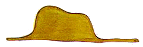
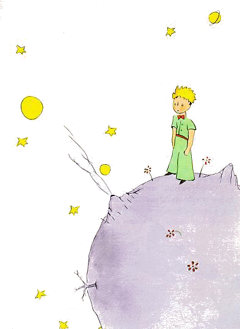

← Quay Về
Hoàng Tử Bé
Saint-Exupéry
Vĩnh Lạc dịch
I
Hồi lên sáu, có lần
tôi đã nhìn thấy một bức tranh tuyệt đẹp trong một cuốn sách nói về Rừng
hoang nhan đề "Những chuyện có thật". Nó vẽ một con trăn đang nuốt một con
thú. Đây là bản sao của bức tranh đó.
Người ta nói trong sách: "Con
trăn nuốt chửng cả con mồi mà không nhai. Sau đó nó không thể nhúc nhích
được nữa và nó nằm ngủ sáu tháng liền trong khi chờ tiêu hoá."
Từ
đó tôi hay nghĩ đến các cuộc phiêu lưu trong rừng rậm, và đến lượt tôi,
với một cây bút chì màu, tôi đã vẽ được bức phác thảo đầu tiên. Bức phác
thảo đầu tiền của tôi. Nó như thế này:

Tôi đem khoe kiệt tác của mình với những người
lớn và hỏi họ rằng nó có làm họ kinh hãi không. Họ trả lời: "Sao lại phải
sợ một cái mũ chứ?"
Bức vẽ của tôi không vẽ một cái mũ. Nó vẽ một
con trăn đang nằm chờ tiêu hoá một con voi. Thế là tôi phải vẽ phía trong
của con trăn, để cho người lớn có thể hiểu. Người lớn lúc nào cũng cần
phải có giải thích. Bức phác thảo thứ hai của tôi nó như thế này:

Những người lớn bèn khuyên tôi nên gác sang một
bên các bức vẽ trăn kín và trăn mở kia và nên chú tâm học địa lý, sử ký,
tính toán và văn phạm. Tôi đã bỏ dở như vậy đó, vào năm lên sáu, một sự
nghiệp hội hoạ tuyệt vời. Tôi bị thất vọng vì sự thất bại của bản thảo số
một và số hai. Những người lớn chẳng bao giờ tự họ hiểu được cái gì cả, và
thật là mệt cho trẻ con lúc nào cũng phải giải thích cho họ.
Vậy là
tôi phải chọn nghề khác, và tôi học lái máy bay. Tôi đã bay khắp thế giới
mỗi nơi một tí. Và môn địa lý, đúng như vậy, đã giúp tôi rất nhiều. Tôi
biết làm thế nào để chỉ nhìn qua một cái là phân biệt được ngay Trung Quốc
với Arizona. Cái đó thật là ích lợi nếu như người ta bay lạc đường trong
đêm tối.
Tôi cũng đã gặp trong đời tôi cả đống những con người
nghiêm chỉnh. Tôi đã sống nhiều với những người lớn. Tôi đã nhìn thấy họ
rất là gần. Nhưng cái đó chẳng làm thay đổi ý kiến của tôi bao
nhiêu.
Mỗi lúc gặp một người lớn có vẻ sáng sủa một tí, tôi lại thử
ông ta bằng bức phác thảo số một mà tôi luôn mang theo. Nhưng luôn luôn
ông ta trả lời: "Đấy là một cái mũ". Thế là tôi chẳng thèm nói với ông ta
về trăn rắn, rừng hoang hay các vì sao nữa. Tôi tự hạ mình xuống ngang tầm
ông ta. Tôi nói về chơi bài, chơi gôn, chính trị và cravate. Và con người
lớn kia cảm thấy hài lòng vô cùng khi được quen một con người biết điều
như vậy.
II
Tôi đã sống cô đơn
như vậy đó, chẳng có ai để chuyện trò thực sự, cho đến khi máy bay của tôi
bị hỏng giữa sa mạc Sahara, cách đây sáu năm. Có cái gì đó trong động cơ
của tôi bị gãy. Và tôi chỉ đi một mình không có hành khách cũng chẳng có
thợ máy, tôi phải một mình bắt đầu cuộc sửa chữa khó khăn. Đấy là vấn đề
sống chết với tôi. Tôi chỉ có đủ nước để uống trong nhiều nhất là tám
ngày.
Đêm đầu tiên vậy là tôi phải ngủ trên cát ở cách xa nơi người
ở hàng ngàn dặm. Lúc đó tôi còn cô độc hơn cả một kẻ đắm tàu trên chiếc bè
lên đênh giữa biển. Bạn chắc sẽ tưởng tượng ra nỗi kinh ngạc của tôi, vào
lúc mờ sáng, khi một giọng nói nhỏ nhẹ ngộ nghĩnh đánh thức tôi dậy. Cái
giọng ấy nói:
– Nếu ông vui lòng ... xin vẽ hộ tôi một con
cừu!
– Cái gì?
– Xin vẽ hộ tôi một con cừu
...
Tôi nhảy dựng lên như là bị sét đánh. Tôi dụi mắt thật
kỹ. Tôi đã nhìn thật kỹ. Và tôi thấy một cậu bé thật khác thường đang nhìn
tôi với vẻ nghiêm trọng. Đây là bức chân dung đẹp nhất mà về sau tôi vẽ
được về cậu bé ấy. Nhưng bức vẽ của tôi chắc là kém đẹp hơn người mẫu
nhiều. Không phải lỗi tại tôi. Tôi đã bị người lớn làm cho nản lòng trong
sự nghiệp hội hoạ từ hồi sáu tuổi, và tôi có bao giờ học vẽ cái gì ngoài
những con trăn khép kín và những con trăn mở bụng đâu.

Vậy là tôi
nhìn cái sự hiển hiện đó với hai con mắt tròn xoe vì kinh ngạc. Xin nhớ là
lúc ấy tôi đang ở cách mọi chỗ có người hàng ngàn dặm. Thế mà cậu bé của
tôi trông chẳng giống như bị lạc đường, chẳng hề mệt lả, chẳng hề đói,
chẳng hề khát nước hay sợ hãi gì cả. Cậu ta chẳng có vẻ gì của một cậu bé
lạc giữa sa mạc, cách nơi có người cả ngàn dặm. Tới khi mở được miệng, tôi
hỏi em:
– Nhưng ... em làm cái gì ở
đây?
Thế là em lặp lại câu nói lúc nãy, thật nhẹ nhàng, như
là một điều rất quan trọng:
– Nếu ông vui lòng ... xin vẽ hộ tôi một con
cừu ...
Khi mà sự bí ẩn quá lớn, người ta không dám không
vâng lời. Dù điều này thật là vô lý khi tôi đang ở cách xa nơi người ở cả
ngàn dặm và đang bị nguy đến tính mạng, tôi rút trong túi ra một cây bút
và một mảnh giấy. Nhưng tôi sực nhớ rằng mình đã chỉ học địa lý, sử ký,
tính toán và văn phạm, và tôi nói với cậu bé (có vẻ hi khó chịu) rằng tôi
không biết vẽ. Em trả lời tôi:
– Không sao đâu. Xin vẽ hộ tôi một con
cừu.
Bởi vì tôi chưa bao giờ vẽ một con cừu cả nên tôi vẽ lại
cho em một trong hai bức tranh mà tôi có thể vẽ. Đó là hình con trăn kín.
Và tôi sững sờ khi nghe cậu bé trả lời:
– Không! Không! Tôi không muốn một con voi
trong bụng một con trăn đâu. Con trăn nguy hiểm lắm, còn con voi thì quá
kềnh càng. Chỗ tôi bé lắm. Tôi cần một con cừu. Hãy vẽ cho tôi một con
cừu!
Thế là tôi vẽ.
Em nhìn chăm chú, rồi nói:
– Không! Con này ốm quá. Hãy vẽ con khác
đi.
Tôi vẽ.
Cậu bé của tôi cười nhẹ, giọng khoan
dung:
– Ông thấy đấy ... đây không phi con cừu,
đây là dê. Nó có sừng ...
Tôi lại vẽ lại lần nữa. Nhưng bức
này cũng bị từ chối như các bức trước.
– Con này già quá. Tôi muốn một con cừu sống
thật lâu.
Bấy giờ tôi hết kiên nhẫn, bởi sốt ruột muốn bắt
đầu tháo máy, tôi vẽ nguệch ngoạc bức vẽ này đây.
Và tôi nói bừa:
– Đây là cái thùng. Con cừu chú muốn nó ở
trong ấy đấy.
Nhưng tôi hết sức ngạc nhiên khi thấy mặt vị
quan toà nhỏ của tôi sáng rõ lên:
– Đúng là cái mà tôi muốn đấy! Ông nghĩ có
cần nhiều cỏ cho con cừu này không ạ?
– Sao vậy?
– Vì chỗ
tôi bé lắm ...
– Chắc là đủ. Tôi vẽ cho em một con cừu bé xíu ấy
mà.
Em cúi đầu xuống bức vẽ:
– Không nhỏ lắm đâu ... Kìa! Nó đã ngủ rồi
...
Và như thế đấy, tôi đã làm quen với ông hoàng bé
nhỏ.
III
Phải rất lâu tôi mới
biết em từ đâu đến. Ông hoàng bé nhỏ, vốn rất hay đặt câu hỏi cho tôi, lại
dường như không bao giờ chú ý nghe tôi hỏi. Chỉ vì những tiếng ngẫu nhiên
buột ra dần dần nói cho tôi hiểu mọi sự. Ví dụ như, khi lần đầu em thấy
chiếc máy bay của tôi (tôi sẽ không vẽ chiếc máy bay đâu, bức vẽ đó quá
phức tạp đối với tôi) em hỏi tôi:
– Cái thứ này là cái gì?
– Không phải
cái thứ. Nó bay được đấy. Nó là một chiếc máy bay. Đó là chiếc máy bay của
tôi.
Tôi tự hào nói cho em biết là tôi bay. Em liền kêu
lên:
– Sao? Ông từ trên trời rơi xuống
ư?
– Phải, tôi nói kiêm tốn.
– ái chà! Cái này ngộ đấy
...
Và ông hoàng bé nhỏ bật lên một tràng cười khanh khách
rất kháu nhưng làm tôi cáu lắm. Tôi muốn ai cũng phải đánh giá một cách
nghiêm túc mọi tai nạn của tôi. Sau đó em nói thêm:
– Thế là ông cũng từ trên trời rơi xuống!
Ông ở hành tinh nào?
Tức thì tôi loé lên một tia sáng nào đó,
về sự có mặt bí ẩn của em, và đột nhiên tôi hỏi:
– Thế ra em ở một hành tinh khác
tới?
Nhưng em không trả lời tôi. Em khẽ lắc đầu nhìn chiếc
máy bay của tôi:
– Nhưng mà ngồi trên cái đó thì ông cũng
chẳng thể tới từ xa lắm đâu ...
Rồi em đắm mình trong giấc mơ
màng thật dài. Sau đó, móc túi lấy con cừu tôi vừa vẽ, em lại mê mải ngắm
cái của báu đó.
Các bạn hãy tưởng tượng tôi bị kích động như thế
nào bởi lời thổ lộ nửa vời về "các hành tinh khác" ấy. Vì vậy, tôi cố tìm
hiểu rõ hơn:
– Cậu bé ơi, em từ đâu đến? "Chỗ em" là đâu
thế? Em muốn mang con cừu của ta về đâu?
Sau một lát im lặng
trầm ngâm, em trả lời tôi:
– Có cái tốt là với cái thùng ông cho tôi,
ban đêm con cừu có thể dùng nó làm nhà ở.
– Phải đấy. Và nếu em
ngoan, ta sẽ còn cho em một sợi dây để buộc nó lại ban ngày. Và một cái
cọc nữa.
Lời đề nghị đó có lẽ làm cho ông hoàng bé nhỏ không
vừa lòng:
– Buộc nó lại? Nghĩ gì mà lạ thế!
–
Nhưng không buộc nó lại, nó sẽ đi lung tung, nó sẽ đi lạc
...
Cậu bạn của tôi lại bật cười khanh khách:
– Nó đi đằng nào được chứ?
– Bất cứ
đâu. Cứ đi thẳng tới trước mặt ...
Bấy giờ ông hoàng nhỏ nhận
xét một cách nặng nề:
– Không hề gì. Chỗ tôi bé
lắm!
Rồi, có lẽ với một chút ngậm ngùi, em nói thêm:
– Thẳng tới trước mặt người ta chẳng đi được
bao xa đâu ...
IV
Vậy đấy, tôi biết
được một điều nữa thật quan trọng: Rằng cái hành tinh quê hương của cậu em
chỉ lớn hơn cái nhà một chút!

Điều ấy chẳng làm tôi ngạc nhiên
nhiều lắm. Tôi vẫn biết ngoài những hành tinh lớn như Trái Đất, Sao Kim,
Sao Hoả, Sao Thuỷ, mà người ta đặt tên cho, có hàng trăm ngôi sao khác mà
đôi khi bé đến nỗi người ta chỉ thấy trong kính viễn vọng một cách khó
khăn. Khi một nhà thiên văn khám phá ra một trong bọn chúng, nhà thiên văn
ấy cho nó một con số. Ví dụ ông gọi nó là "tiểu hành tinh
3251".
Tôi có những lý do chính đáng để coi rằng cái hành tinh từ
đó ông hoàng nhỏ đến đây là tiểu hành tinh B612. Tiểu hành tinh đó chỉ
được trông thấy có một lần trong kính viễn vọng năm 1909, bởi một nhà
thiên văn Thổ Nhĩ Kỳ.
Lúc đó ông này mở một buổi thuyết trình lớn
về phát hiện của mình tại một Hội nghị Quốc tế về Thiên văn. Nhưng do bộ
quần áo của ông ta, chẳng ai tin điều ông ta nói. Người lớn là thế
đấy.
May mắn cho tiểu tinh cầu B612, một nhà độc tài Thổ Nhĩ Kỳ
buộc dân Thổ phi mặc âu phục, ai không tuân theo sẽ bị tội chết. Nhà thiên
văn trình bày lại vấn đề năm 1920, trong bộ quần áo rất lịch sự. Và lần
này, tất cả mọi người đồng ý với ông ta.
Nếu tôi kể với các bạn tỉ
mỉ về tiểu tinh cầu B612, và nếu tôi tiết lộ với các bạn số hiệu của nó,
ấy là tại các người lớn. Những người lớn rất thích chữ số. Khi bạn nói
chuyện với họ về một người bạn mới, không bao giờ họ hỏi bạn về cái cốt
yếu đâu. Họ không bao giờ hỏi: "Giọng nói hắn ta thế nào? Hắn thích chơi
trò gì? Hắn có sưu tầm bươm bướm không?" Họ chỉ hỏi bạn: "Hắn ta bao nhiêu
tuổi? Hắn ta có mấy anh em? Hắn ta cân nặng bao nhiêu?" Thế đấy. Sau đó,
họ cho vậy là họ hiểu hắn ta rồi. Nếu bạn nói với những người lớn: "Tôi có
thấy một cái nhà gạch mầu hồng với hoa phong lữ trên cửa sổ, và chim bồ
câu trên mái ..." họ chẳng làm thế nào mà hình dung nổi cái nhà ấy như thế
nào đâu. Phải nói với họ: "Tôi đã thấy một cái nhà 10 vạn franc". Họ sẽ
kêu ngay: "Ôi thật xinh đẹp làm sao."
Như vậy đó, nếu các bạn bảo
họ: "Ông hoàng bé nhỏ là có thật chứ, chứng cứ là cậu ta rất đẹp, cậu ta
cười và cậu ta thích có một con cừu. Khi người ta thích có một con cừu,
thế là có người ấy chứ!", họ sẽ nhún vai và cho bạn là trẻ con! Nhưng nếu
bạn hỏi họ: "Cái hành tinh từ đó cậu ấy đi đến đây là tiểu tinh cầu B612",
thế là họ nghe ra ngay, và thôi không phá quấy bạn với các câu hỏi của họ
nữa. Họ là thế. Không nên giận họ. Trẻ con phải hết sức rộng lượng đối với
người lớn.
Nhưng chắc chắn rằng đối với bọn ta là những người hiểu
đời, chúng ta cóc cần những con số! Tôi đã rất thích bắt đầu kể câu chuyện
này như kiểu một câu chuyện thần tiên. Tôi đã rất thích nói thế
này:
"Xưa có một lần, một ông hoàng bé nhỏ ở trên một tinh cầu chỉ
lớn hơn cậu ấy có một tí, cậu ấy thấy cần có một người bạn thân ...". Đối
với những ai hiểu đời, kể như vậy có vẻ thật hơn nhiều.
Bởi vì tôi
không muốn người ta đọc cuốn sách của tôi một cách hời hợt. Khi kể lại các
kỷ niệm này, tôi buồn tủi biết bao. Sáu năm đã qua, từ khi cậu bạn tôi đi
mất với con cừu của em. Nếu tôi cố gắng tả lại em ở đây, chính là để tôi
không quên em. Thật là buồn nếu ta quên một người bạn. Có phải ai cũng có
được một người bạn thân đâu. Và có lẽ tôi sắp trở nên những người lớn, chỉ
còn thích các chữ số. Lại chính cũng vì thế nữa mà tôi đã mua một hộp màu
nước và bút chì màu. Trở lại vẽ vời thật là khó, vào tuổi tôi bây giờ, khi
mà người ta chưa hề vẽ gì ngoài con trăn khép kín với con trăn mở từ hồi
lên sáu. Tôi sẽ cố thử, hẳn thế, làm những bức chân dung càng giống càng
hay. Nhưng tôi không thành công chút nào. Một bức trước vứt đi, bức sau
còn tệ hơn nữa. Tôi lại cũng có sai lầm về tầm vóc. Chỗ này thì ông hoàng
nhỏ lớn quá. Chỗ kia em bé quá. Tôi cứ lần mò như thế này rồi như thế
khác, khi được khi không. Cuối cùng tôi còn nhầm ở những nét quan trọng
hơn nữa. Nhưng này, các bạn phải tha lỗi cho tôi. Bạn tôi không hề giảng
giải gì cho tôi. Có lẽ em cho là tôi cũng như em. Nhưng tôi, buồn thay,
tôi không biết cách nhìn thấy con cừu xuyên qua cái thùng. Có lẽ tôi hơi
giống những người lớn rồi. Tôi đã già rồi.
V
Mỗi ngày tôi lại biết
thêm một điều gì đó về hành tinh, về lúc ra đi, về cuộc du hành của cậu.
Cái ấy đến nhẹ nhàng bằng những suy đoán ngẫu nhiên. Cũng như vậy đó mà
vào ngày thứ ba, tôi được biết về tấm bi kịch của những cây
baobab.
Lần này cũng là nhờ con cừu, ông hoàng nhỏ hỏi tôi, như vừa
mới nghĩ ra điều gì nghiêm trọng lắm:
– Có thật đúng là con cừu ăn những bụi cây
con không?
– Phải, đúng đấy.
– ồ, tốt quá!
Tôi
không hiểu sao chuyện những con cừu ăn những bụi cây con lại quan trọng
như thế. Nhưng ông hoàng nhỏ nói thêm:
– Cho nên chúng ăn cả những cây baobab
chứ?
Tôi bảo rằng cây baobab không phải là thứ bụi cây nhỏ,
mà là những cây to như cả cái nhà thờ, và cậu em có mang theo cả một đàn
voi, thì cả đàn voi ấy cũng chẳng làm lung lay nổi một cây
baobab.
ý nghĩ về đàn voi làm cho ông hoàng nhỏ bật cười:
– Phải chồng con này lên con kia ...
Nhưng cậu em nhận xét với vẻ triết lý:
– Bọn baobab, trước khi lớn, cũng bắt đầu bé
tẹo chứ!
– Đúng là như thế. Nhưng sao em lại cứ muốn cho con cừu
của em ăn những cây baobab nhỏ thế?
Em trả lời: "Ôi chà!" như
đó là một chuyện tất nhiên. Và tôi phải bắt trí thông minh của tôi làm
việc dữ dội mới tự hiểu được vấn đề ấy.
Nguyên là, trên hành tinh
của ông hoàng nhỏ, cũng như trên mọi hành tinh khác, đều có những loại cỏ
tốt và những loại cỏ xấu. Do đó, có hạt tốt của cỏ tốt và hạt xấu của cỏ
xấu. Nhưng không thể nhìn thấy hạt. Chúng ngủ trong bí mật cho đến khi một
cái hạt nào trong bọn chúng nổi hứng muốn thức dậy ... Nó vươn vai, rụt rè
nhú lên mặt trời một cái nhánh con hiền lành tuyệt xinh. Nếu là nhánh dưa
hay một nhánh hồng, ta có thể muốn để cho nó mọc thế nào tuỳ ý. Nhưng nếu
là một cây xấu, ngay khi nhận ra là phải nhổ ngay. Mà trên hành tinh của
ông hoàng nhỏ thì có những hạt giống kinh khủng ... ấy là những hạt
baobab. Chúng nhiễm đầy cả tinh cầu. Mà một cây baobab, nếu như ta chú ý
muộn màng quá, ta có thể chẳng bao giờ dẫy nó ra được nữa, baobab sẽ mọc
cao và rễ nó chằng chịt khắp tinh cầu. Nó cho rễ của nó xói đục hành tinh.
Và nếu hành tinh mà quá bé, mà nếu cây baobab mà nhiều quá, có thể làm vỡ
tung cả hành tinh.
"Đây là một vấn đề kỷ luật, ông hoàng nhỏ về sau
nói với tôi. Khi ta làm vệ sinh cho ta buổi sáng rồi, ta phải làm kỹ vệ
sinh cho hành tinh. Phải đều đặn lo nhổ bọn baobab ngay lúc ta vừa phân
biệt được chúng với cây hoa hồng. Đó là một việc làm chán lắm, nhưng mà
thật dễ."
Đến một ngày, cậu em khuyên tôi cố sức vẽ được một bức vẽ
đẹp, để cho các cậu bé ở quê hương tôi ghi nhớ chuyện ấy. "Một ngày kia,
nếu các bạn ấy lên đường, cậu em nói với tôi, chuyện ấy sẽ có ích cho họ.
Đôi khi hoãn lại một việc cũng chẳng hại gì. Nhưng nếu là những cây
baobab, thì bao giờ cũng tai hoạ đấy. Tôi có biết một tinh cầu, trên ấy có
một gã lười. Hắn bỏ mặc ba cái cây con ..."

Thế là, theo sự chỉ dẫn
của ông hoàng nhỏ, tôi đã vẽ tinh cầu đó. Tôi tuyệt không thích lên mặt
dạy đời. Nhưng cái hoạ baobab còn ít người biết quá, mà những nguy hiểm mà
một cậu bé một mai lạc vào một tiểu tinh cầu sẽ gặp phải thì rất là đáng
kể, cho nên, chỉ một lần thôi, tôi làm khác với nguyên tắc của tôi. Tôi
xin nói: "Hỡi các em! Hãy coi chừng bọn baobab!" ấy chính là để báo trước
cho các bạn tôi về một nguy cơ mà các bạn cũng như tôi vẫn gần kề bên nó
mà không hay biết, nên tôi ra sức thật nhiều để vẽ bức vẽ đó! Bài học mà
tôi đưa ra rất xứng công. Có lẽ bạn sẽ tự hỏi: Tại sao trong cuốn sách này
không có bức vẽ nào to lớn bằng bức vẽ những cây baobab? Câu trả lời đơn
giản thôi: tôi có thử vẽ nhưng không thành. Khi vẽ cây baobab, tôi bị thôi
thúc bởi một tình cảm cấp bách.
VI
|
Ô
|
i! Ông hoàng bé nhỏ ơi, dần dà, như vậy đó, tôi hiểu
ra cuộc đời nhỏ nhoi buồn bã của em. Bao lâu nay em chỉ nhờ sự êm
đềm của hoàng hôn để mà khuây khoả. Tôi biết được nét mới đó vào
buổi sáng ngày thứ tư, khi em bảo tôi: |
– Tôi rất thích cảnh mặt trời lặn. Ta đi xem
mặt trời lặn đi.
– Nhưng phải đợi chứ ...
– Đợi cái
gì?
– Đợi lúc mặt trời đó lặn.
Thoạt nhiên em có vẻ
kinh ngạc, và rồi em tự cười mình. Và em bảo tôi:
– Tôi cứ tưởng còn ở nhà!!
Thế
đấy. Khi ở nước Mỹ là buổi trưa thì ai cũng biết là mặt trời đang lặn ở
nước Pháp. Nếu chỉ cần đi một phút là đến được nước Pháp là xem được cảnh
mặt trời lặn. Không may nước Pháp ở quá xa. Nhưng, trên cái hành tinh bé
đến thế của em, em chỉ cần dịch ghế vài bước. Khi nào em thích là em nhìn
thấy mặt trời lặn ...
– Có một ngày, tôi nhìn mặt trời lặn bốn
mươi ba lần!
Một chốc sau đó em nói thêm:
– Ông biết đấy... khi người ta buồn quá,
người ta thích cảnh mặt trời lặn...
– Thế cái ngày bốn mươi ba lần
mặt trời lặn ấy, có phải em buồn quá không?
Nhưng ông hoàng
bé nhỏ không trả lời.
VII
Ngày thứ năm, vẫn là
nhờ ở con cừu, tôi biết được cái bí mật ấy trong cuộc đời ông hoàng bé
nhỏ. Bất ngờ em hỏi tôi, không cần mào đầu, y như đó là kết quả của một
vấn đề được âm thầm suy nghĩ từ lâu rồi:
– Một con cừu, nếu nó ăn cây non, tất nó
cũng ăn hoa chứ?
– Cừu thì gặp cái gì nó ăn cái ấy.
– Cả
những bông hoa có gai ư?
– Phải. Cả những bông hoa có gai.
–
Thế thì gai dùng để làm gì nào?
Tôi không biết. Tôi bấy giờ
đang bận tháo một đinh ốc vặn quá chặt trong động cơ của tôi. Tôi đã rất
lo lắng vì thấy cái máy có vẻ hỏng nặng lắm, mà nước uống thì cạn dần làm
cho tôi sợ xảy ra điều tệ hại nhất.
– Những cái gai, chúng dùng để làm
gì?
Ông hoàng nhỏ không bao giờ chịu bỏ một câu hỏi, một khi
đã nói ra. Tôi thì đang bực quá với cái đinh ốc, và tôi trả lời
bừa:
– Gai, nó chẳng dùng được vào việc gì sất.
Nó chỉ là cái tính độc ác của hoa thôi!
– ồ!
Nhưng sau
một lát im lặng em kêu lên một cách giận dỗi:
– Tôi không tin! Loài hoa yếu đuối lắm.
Chúng ngây thơ lắm. Chúng cố tự làm cho chúng được vững tâm. Chúng cho là
với những cái gai, chúng đã ghê gớm lắm...
Tôi không trả lời
gì cả. Lúc ấy, tôi tự nhủ: "Cái đinh ốc này mà còn ngoan cố, ông sẽ cho
mày một búa văng xương."
Ông hoàng nhỏ lại làm sao lãng những suy
nghĩ của tôi:
– Còn ông, ông tưởng rằng hoa...
–
Không! Không! Tôi có tưởng gì đâu! Tôi trả lời đại thế thôi. Tôi đang bận
những việc hệ trọng!
Cậu nhìn tôi ngạc nhiên:
– Những việc hệ trọng!
Cậu em
nhìn thấy tôi tay cầm búa, các ngón đen thui vì dầu máy, cúi xuống một vật
mà em xem ra thật là xấu xí.
– Ông nói như các người lớn
ấy!
Câu ấy làm tôi hơi xấu hổ. Nhưng không thương xót, em nói
thêm:
– Ông lẫn lộn hết... ông xáo trộn
hết!
Cậu em thực sự bực tức. Mái tóc của em vàng xoã tung ra trước
gió:
– Tôi biết có một tinh cầu, trên đó có một ông mặt mũi đỏ gay.
Ông ta không hề ngửi một bông hoa. Không hề ngắm một vì sao. Không hề yêu
một người nào. ông ta chẳng bao giờ làm cái gì khác những bài tính cộng.
Và suốt ngày ông ta cứ lặp đi lặp lại như ông: "Tôi là một người đúng đắn!
Tôi là một người đúng đắn!", và cái đó làm ông ta vênh vang hợm hĩnh.
Nhưng ông ta đâu có phải là người, ông ta là một cái nấm!
– Một cái
gì?
– Một cái nấm!
Ông hoàng bé nhỏ lúc này tái xanh
vì giận.
– Đã hàng triệu năm nay, hoa làm ra gai.
Hàng triệu năm nay, cừu vẫn cứ ăn hoa. Vậy mà tìm hiểu xem vì sao hoa lại
cứ khổ sở làm ra những cái gai vô tích sự ấy, lại là chuyện không đúng đắn
hay sao? Chiến tranh giữa cừu và hoa là chuyện không quan trọng hay sao?
Không đúng đắn hơn, không quan trọng hơn những bài tính cộng của một cái
ông to tướng mặt mũi đỏ gay hay sao? Và nếu như tôi, tôi biết một cái hoa
duy nhất trên đời không có ở đâu ngoài tinh cầu của tôi, thế mà một con
cừu nhỏ có thể huỷ hoại nó bằng cách táp một cái mà thôi, vào một buổi
sáng nào đó, mà không hề biết là mình vừa làm cái gì, chuyện đó không quan
trọng hay sao!
Em đỏ mặt rồi nói tiếp:
– Khi một người yêu một đoá hoa duy nhất
trong hàng triệu triệu ngôi sao, thì chỉ nhìn những ngôi sao là đủ làm cho
anh ta hạnh phúc. Anh ta nghĩ: "Đoá hoa của mình ở đâu đó trên kia..."
Nhưng nếu con cừu mà ăn đoá hoa đi, thì anh ta sẽ thấy như là tất cả các
ngôi sao tự nhiên tắt lịm! Và chuyện đó không quan trọng hay
sao!
Em nghẹn ngào không nói được nữa. Thốt nhiên em bật lên
nức nở. Đêm đã buông xuống. Tôi đã bỏ các đồ nghề xuống. Tôi cóc cần cái
búa của tôi, cái đinh ốc của tôi, cóc cần cái khát, cóc cần cái chết. Trên
một ngôi sao, trên một hành tinh, hành tinh của tôi, trái đất, có một ông
hoàng bé nhỏ cần được an ủi! Tôi ôm em trong vòng tay. Tôi ru em. Tôi nói
với em: "Đoá hoa mà em yêu không bị nguy đâu... Tôi sẽ vẽ một cái rọ mõm,
cho con cừu của em... Tôi..." Tôi không biết nói với em thế nào nữa. Tôi
cảm thấy mình rất vụng về. Tôi không biết làm sao với tới được em, đi đâu
để gặp được em... Thật huyền bí làm sao, cái xứ sở của nước mắt.
VIII
Tôi đã tìm hiểu rất
nhanh để hiểu hơn về đoá hoa này. Trên tinh cầu của ông hoàng nhỏ, vẫn
thường có những bông hoa rất đơn giản, điểm trang chỉ bằng một vòng cánh
hoa, và chẳng chiếm bao nhiêu chỗ, và chẳng làm phiền ai. Một buổi sáng,
chúng hiện ra trong cỏ rồi lại héo tàn vào chiều tối. Nhưng cái cây hoa
ấy, một ngày kia, đã nảy mầm từ một cái hạt không biết từ đâu tới và ông
hoàng nhỏ đã theo dõi cái mầm con không giống với các mầm con nào khác. Nó
có thể là một loại baobab mới. Nhưng cái cây nhỏ liền thôi không lớn lên
nữa, và bắt đầu sửa soạn để ra hoa. Ông hoàng nhỏ chứng kiến sự xuất hiện
một cái nụ lớn, cảm thấy rõ ràng từ cái nụ này sẽ lộ ra một điều kỳ diệu,
nhưng đoá hoa vẫn cứ điểm trang hoài, nấp kín trong căn buồng xanh của nó.
Hoa chưa chọn kỹ mầu sắc của mình. Hoa chậm rãi trang phục, sửa lại ngay
ngắn từng cánh hoa. Hoa không muốn hiện ra nhàu nát như cái mồng gà. Hoa
chỉ muốn lộ ra trong sắc hương rực rỡ. Ôi chao! Hoa thật là điệu! Cuộc
trang điểm huyền bí của nàng kéo dài từ ngày này sang ngày nọ. Và rồi tới
một sớm mai, đúng giờ mặt trời mọc, nàng hiện ra.
Và nàng, vốn đã
công phu đến như thế, bây giờ vừa ngáp vừa nói:
– Ôi! Em chỉ vừa thức dậy... Em xin lỗi
anh... Tóc tai em còn rũ rượi thế này...
Thế là ông hoàng nhỏ
không nén nổi sự ngưỡng mộ:
– Nàng thật là đẹp!
– Thật vậy sao, –
hoa trả lời một cách nhẹ nhàng – Và em lại cùng sinh ra với vầng
dương...
Ông hoàng nhỏ biết ngay cô nàng không lấy gì làm
kiêm tốn lắm, nhưng nàng thật là dễ thương!
– Đã đến giờ điểm tâm, có phải anh không, –
nàng nói thêm ngay sau đó, – xin anh hãy nhớ đến em...
Thế là
ông hoàng nhỏ, đầy xấu hổ, đi tìm một chiếc thùng tưới đầy nước mát và
tưới cho bông hoa.

Như vậy đấy, cô nàng đã nhanh chóng làm cho cậu
em lo nghĩ với tính kiêu kỳ hơi u ám của cô. Chẳng hạn một hôm, cô đã nói
với ông hoàng nhỏ về bốn cái gai của mình:
– Chúng có thể tới đây, bọn hổ ấy, với móng
vuốt của chúng.
– Trên tinh cầu của anh không có hổ, ông hoàng nhỏ
nhận xét. Vả lại, hổ đâu có ăn cỏ.
– Em đâu phải là cỏ, bông hoa
nói nhẹ nhàng.
– Xin lỗi...
– Em chẳng sợ gì hổ, nhưng em
khiếp gió luồn. Anh có một tấm chắn gió nào không?
"Khiếp gió
luồn... đối với một cây nhỏ thế là không hay, ông hoàng nhỏ nhận xét. Cô
nàng này thật phức tạp..."
– Chiều tối anh hãy đặt em trong bầu kính
nhé. Chỗ anh rét lắm. Thiếu tiện nghi quá. ở chỗ em...
Nhưng
cô nàng im bặt. Cô đến đây lúc hãy còn là hạt. Cô chẳng thể hiểu được gì
về các thế giới khác. Ngượng vì trót để lộ là mình bốc phét một cách ngây
ngô quá như thế, cô húng hoáng ho hai ba lượt để dồn ông hoàng nhỏ vào
lúng túng:
– Cái chắn gió, anh có không?...
–
Anh đã định đi lấy thì em bắt đầu nói!
Thế là cô nàng cố ho
mạnh hơn nữa để bắt buộc cậu phải nhận lỗi.
Vậy mà ông hoàng nhỏ,
bởi vì ý tốt của tình yêu, vẫn đối xử với cô rất tốt. Chàng đã nghĩ ngợi
nghiêm trang về những lời nói vớ vẩn của nàng, và trở nên khổ sở
lắm.
"Đáng lẽ tôi không nên nghe, một hôm cậu em thú nhận với tôi,
không bao giờ nên nghe loài hoa cả. Chỉ nên nhìn chúng và thở hương thơm
của chúng thôi. Cái hoa của tôi làm thơm ngát tinh cầu của tôi, nhưng tôi
lại không biết vui lòng. Câu chuyện móng vuốt ấy đáng lẽ làm cho tôi cảm
động thì tôi lại bực..."
Cậu còn thú nhận với tôi:
"Ngày ấy,
tôi chẳng biết cách hiểu. Đáng lẽ tôi phải xét đoán nàng trên việc làm chứ
không phải bằng lời nói. Nàng toả thơm tôi, làm cho tôi sáng rực lên. Đáng
lẽ tôi không bao giờ nên bỏ đi cả. Đáng lẽ tôi phải thấy được cái dịu hiền
của nàng đằng sau mọi đòi hỏi đáng thương ấy. Loài hoa thường hay mâu
thuẫn! Nhưng bấy giờ tôi còn quá trẻ để mà biết yêu nàng."
IX
Tôi đoán rằng em nhờ
vào một chuyến thiên di của loài chim hoang để mà thoát đi. Buổi sáng hôm
ra đi, em đã dọn dẹp tinh cầu thật ngăn nắp. Em nạo vét kỹ càng các quả
núi lửa đang hoạt động của em. Em có hai quả núi lửa đang hoạt động. Và
chúng rất thuận tiện cho việc nấu ăn buổi sáng. Em cũng có một quả núi lửa
đã tắt... Nhưng, như lời em nói: "Biết đâu đấy!" nên em cũng nạo vét cả
quả núi lửa đã tắt nữa. Được nạo vét kỹ, các quả núi lửa sẽ cháy đỏ và
đều, không có phun trào. Các trận phun trào của núi lửa cũng giống như lửa
trong lò sưởi. Tất nhiên là trên trái đất của chúng ta, chúng ta thật nhỏ
bé quá, không nạo vét được các quả núi lửa của mình. Cho nên chúng gây cho
ta nhiều điều phiền phức.
Ông hoàng nhỏ cũng nhổ, với một chút ngậm
ngùi, những cái mầm vừa nhú của bọn baobab. Em đã nghĩ rằng mình sẽ không
bao giờ về nữa. Nhưng mọi việc quen thuộc này buổi sáng hôm nay sao đối
với em thật vô cùng êm đềm. Và, khi em tưới hoa lần cuối, và sửa soạn đậy
nàng trong lồng kính, em cảm thấy muốn khóc.
– Vĩnh biệt, em nói với
hoa.
Nhưng nàng không đáp.
– Vĩnh biệt, em nhắc lại.
Hoa
ho lên. Nhưng không phải vì viêm họng.
– Em đã khờ dại lắm, sau cùng cô nói. Anh
tha lỗi cho em. Hãy cố gắng mà sống hạnh phúc.
Ông hoàng nhỏ
ngạc nhiên vì không thấy nàng trách móc. Em đứng sững, tay cầm nguyên cái
bầu kính. Em không hiểu được vẻ dịu dàng bình tĩnh ấy của nàng.
– Vâng, em yêu anh, hoa nói với em. Anh
không biết gì cả, ấy là lỗi tại em. Điều ấy không quan trọng. Nhưng anh,
anh cũng khờ dại như em. Hãy cố gắng mà sống hạnh phúc... Anh bỏ cái bầu
kính đó xuống đi. Em không cần đâu...
– Thế gió...
– Em
không hay bị cảm nhiều thế đâu... Gió mát ban đêm tốt cho em lắm. Em là
một cái hoa mà.
– Nhưng bọn thú...
– Chắc em phải chịu đựng
vài ba con sâu nếu em muốn biết bươm bướm là thế nào. Hình như lũ bướm ấy
thật là đẹp. Nếu không ai sẽ viếng thăm em? Anh sẽ đi xa. Còn bọn thú dữ,
em không sợ. Em có móng vuốt của em.
Nàng ngây thơ chìa ra
bốn cái gai của mình. Rồi nàng nói thêm:
– Đừng chần chờ như vậy nữa, khó chịu lắm.
Anh đã quyết ra đi mà. Hãy đi đi anh.
Bởi vì nàng không muốn
em nhìn thấy nàng khóc. Đó là một đoá hoa vô cùng kiêu hãnh...
Đọc Tiếp ->